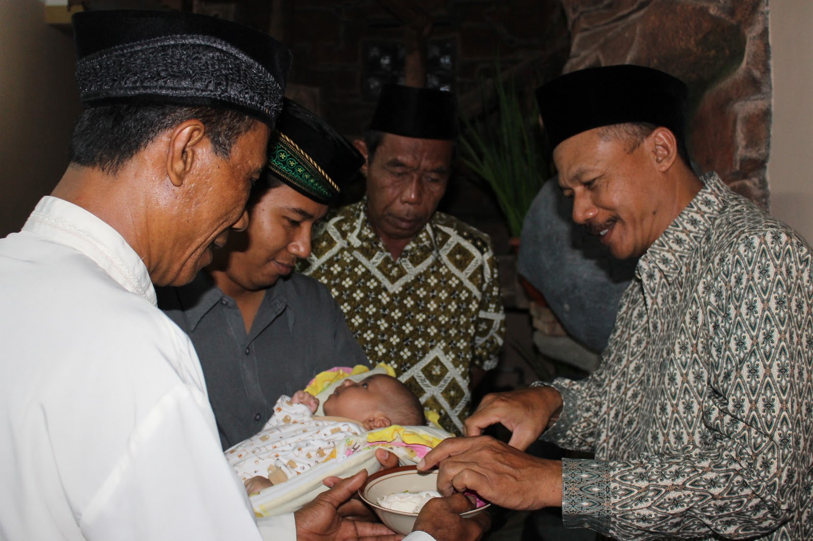
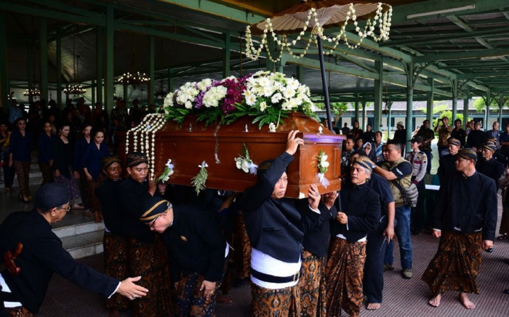
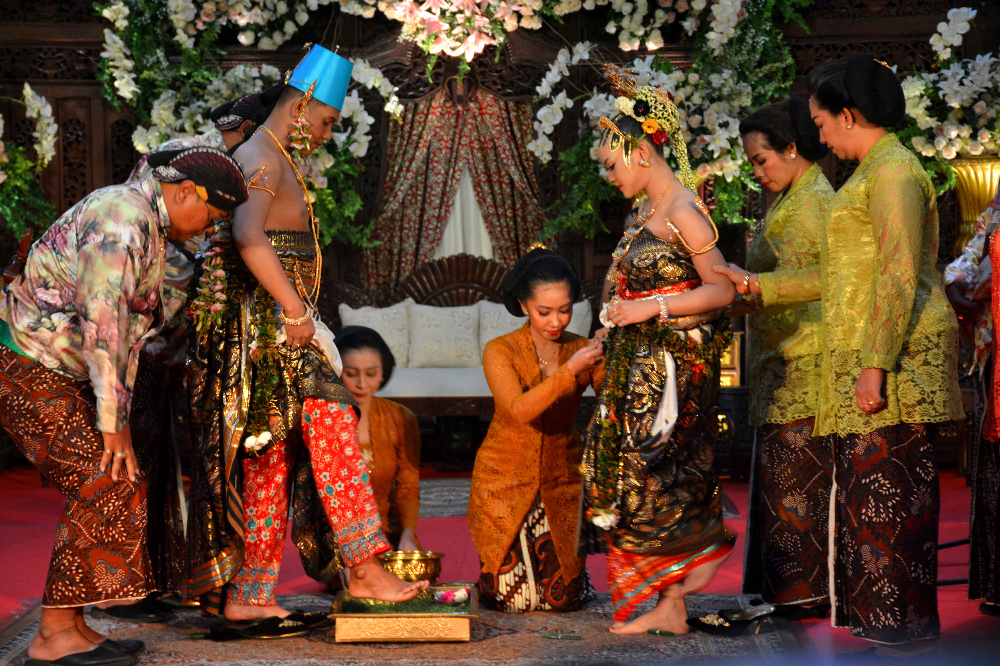
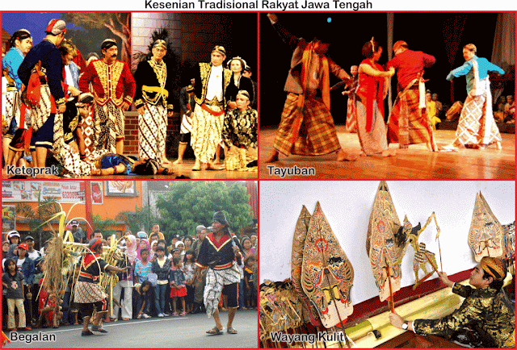

Pulau Jawa merupakan pulau terbesar di Indonesia dan merupakan salah satu pulau yang paling padat penduduknya di dunia. Pulau ini terletak di bagian tengah Indonesia, di antara Pulau Sumatera di sebelah barat dan Pulau Bali di sebelah timur, dikelilingi oleh Laut Jawa di utara, Samudra Hindia di selatan, Selat Sunda di barat, dan Selat Bali di timur. Pulau Jawa menjadi pusat ekonomi, sosial, dan budaya penting di Indonesia dengan kota-kota besar seperti Jakarta, Bandung, Surabaya, dan Yogyakarta yang berperan signifikan. .

Rumah Adat Jawa
Upacara Kelahiran Jawa
Upacara Kematian Jawa
Pernikahan Adat Jawa
Kriya Jawa